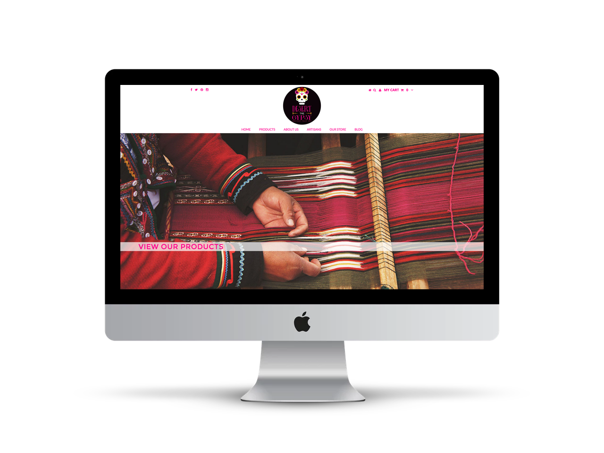
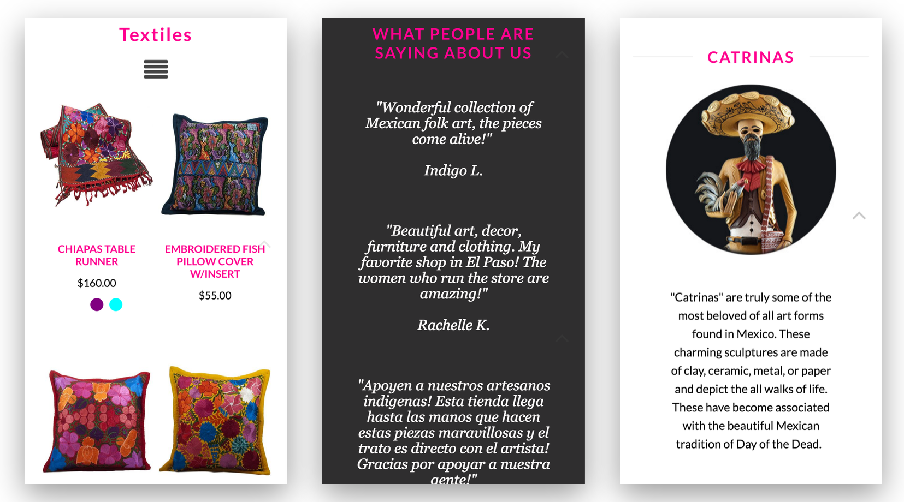

The Desert Gypsy’s owner wanted to bring her brick-and-mortar store online. The store specializes in authentic artisanal products from Mexico. Using Shopify’s template as a starting point, I created a website and brand that was unique to the store.
Through prototyping, I created UI that was easily navigable by the user. I trained the staff on how to use the new eCommerce website by creating user guides. Additionally, I continually examine site analytics and user feedback to identify roadblocks to conversion.
My Role: Prototyping, Design, Development, Product Photography, Training, SEO & Analytics
